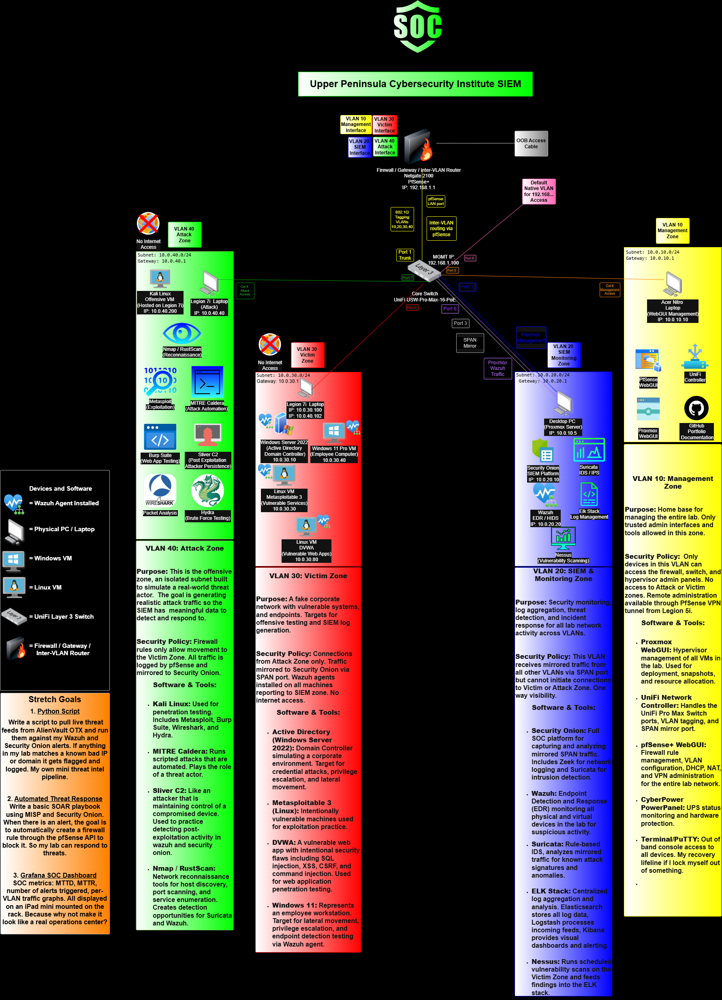

Architecture
Network Diagram
Four isolated VLANs routed through a pfSense firewall, with a SPAN mirror copying every zone's traffic to the SIEM — fully air-gapped from the internet.

Click the diagram to zoom.
VLAN 10
Management
Home base for administering the network. Only trusted admin interfaces — pfSense, UniFi Controller, Proxmox — live here.
VLAN 20
SIEM Monitoring
Security Onion, Wazuh, and Nessus. Receives mirrored traffic from every VLAN via the SPAN port — one-way visibility.
VLAN 30
Victim Network
Active Directory (DC01), Metasploitable, Windows 11, and DVWA. The targets for offensive testing and log generation.
VLAN 40
Attack Network
Kali Linux offensive host. Isolated, no internet — its only job is generating realistic attack traffic for the SIEM to catch.